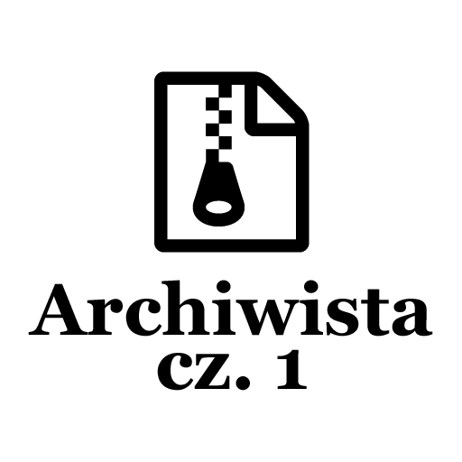

Post archive
Archiwista [cz. 1 - Planowanie]

Jakiś czas temu na zajęciach z programowania prowadzący wspomniał o programie, który napisał. Jego zasada działania była prosta - kiedy użytkownik naciśnie kombinację klawiszy ctrl + s (zazwyczaj jest to skrót zapisu), program automatycznie przeszukuje pliki wyznaczonego projektu i pakuje wszystkie pliki źródłowe do archiwum.
Nazywa je odpowiednio z datą, aby można było w przypadku potrzeby wziąć wersję, która nam najbardziej odpowiada.
Program nie ma na celu zastąpienie systemu kontroli wersji, ale jego suplementację. Sporej ilości osób, szczególnie na samym początku przydarzyło się zapomnieć zrobić commita. A to edytor tekstowy, którego używali wyłączył się ponieważ wystąpił błąd lub zabrakło prądu. Powodów, przez które możemy stracić dane jest mnóstwo. Program powinien sobie z nimi wszystkimi poradzić i pozwolić nam na bezpieczne pisanie kodu ze świadomością, że mamy dużo kopii, z których w razie czego możemy skorzystać.
Dlaczego?
Wybrałem ten program na pierwszy ogień, ponieważ jest w miarę prosty, chociaż oczywiście można dodać więcej funkcjonalności, które odpowiednio go rozbudują. Kolejnym powodem, dla którego go wybrałem jest fakt, że będę mógł go używać w każdym innym projekcie. Wracając do aplikacji musimy zastanowić się nad kilkoma rzeczami.
Rozmiary plików?
Pliki źródłowe nie ważą za dużo. W dzisiejszych czasach przestrzeń dyskowa jest również bardziej dostępna niż kiedyś. Nawet jeżeli wziąć to pod uwagę to można czyścić pliki źródłowe np. przy każdym uruchomieniu programu. Czyszczone byłyby wczesne wersje, zostawilibyśmy kilka ostatnich kopii jeśli użytkownik chciałby z nich skorzystać.
Gdzie zapisywać?
Wstępnie założę, że program będzie domyślnie zapisywał wszelkie kopie w folderze obok projektu. Dodam opcję, którą będzie można nadpisać ścieżkę zapisu naszych kopii.
Kilka projektów?
Kolejną fajną funkcjonalnością byłaby możliwość posiadania listy projektów, nad którymi pracowaliśmy. Tym sposobem nie musimy za każdym razem wskazywać ścieżki do naszego projektu i ustawiać ich parametrów.
Ustawienia
Kolejną ważną sprawą, którą trzeba wziąć pod uwagę jest przechowywanie ustawień użytkownika. Powinniśmy być w stanie umożliwić użytkownikowi na zarządzanie jego dodanymi projektami, na dodanie nowego projektu, usuwanie oraz edycję istniejącego. Ustawienia te będą przechowywane w jakimś stałym miejscu zapewne w katalogu domowym użytkownika.
I co dalej?
Skoro mamy już opisane funkcje systemu chcę nałożyć kilka limitacji. Pierwszym ograniczeniem będzie to, że aplikacja powinna składać się z jednego pliku uruchamialnego .exe, drugim ograniczeniem będzie konieczność posiadania określonego wolnego miejsca na dysku gdzie znajduje się nasz folder z kopiami zapasowymi. Program powinien być na tyle inteligentny, że jak będzie kończyło się miejsce na dysku, to powinien odpowiednio zwolnić miejsce, aby mógł kontynuować swoją pracę.